一场比赛ALL SYSTEMS, ONE RACE
从发车灯亮起，到领奖台的那一刻：赛道、AI、漂移蓄能、氮气、补给、城市危险物、界面、声音和触控，全部被塞进一个约两分钟的晴湾环城赛中。

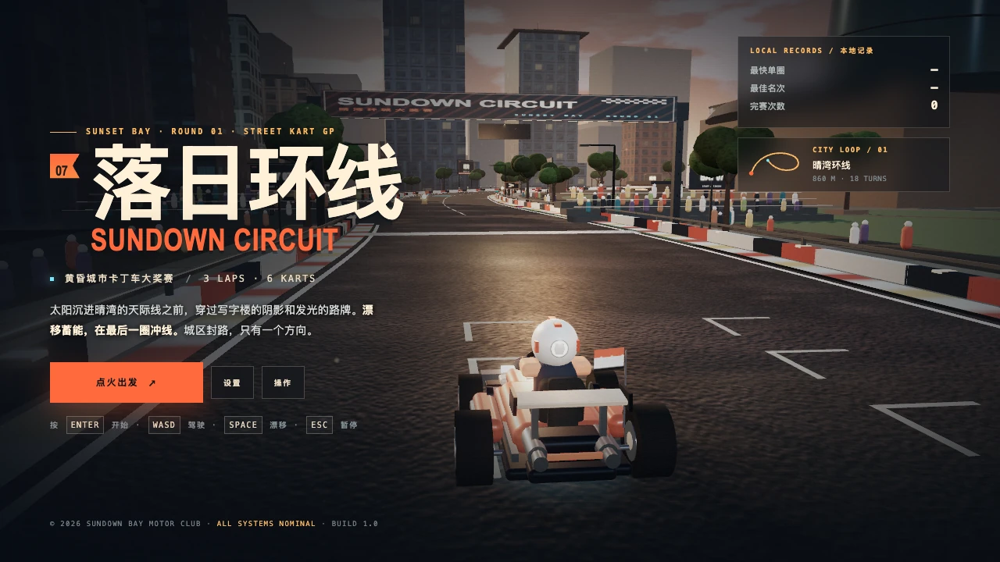
TITLE · HERO KART 07 · SUNDOWN BAY所有功能截图 GAME FEATURES / IN-GAME CAPTURES
以下全部为游戏真实运行时画面。点击图片查看原始尺寸。个别画面通过运行时状态布置突出对应系统，不是概念图；场景、物理、HUD 与效果均来自游戏本身。

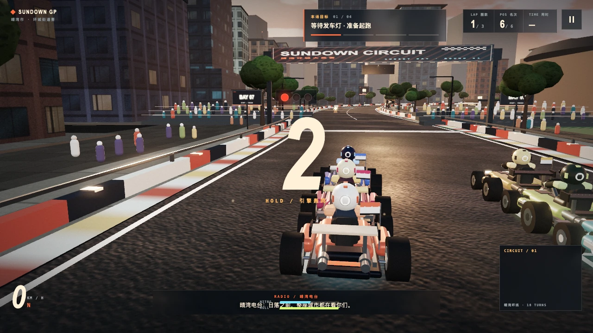
发车灯与倒计时
发车灯、倒计时数字、晴天湾电台提示。按住油门在绿灯时获得完美起步。

三圈城市竞速
五台 AI 对手、圈速与名次、车体耐久、氮气槽、漂移蓄能、小地图和目标进度。

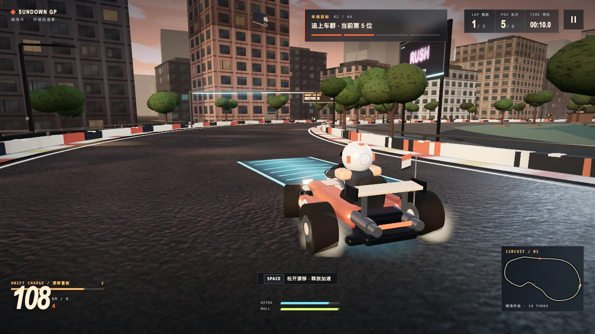
漂移蓄能
松开方向与漂移键之间的时机就是全部。蓄能越久，松开后的三级推进越强；胎痕和烟雾留下轨迹。

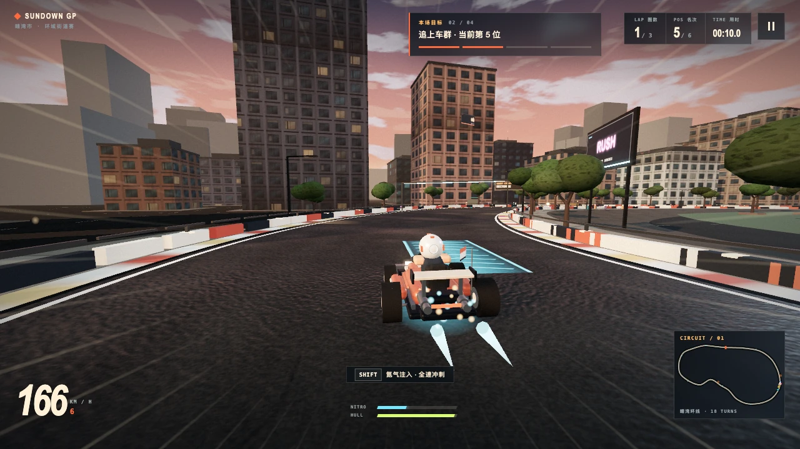
氮气冲刺
消耗氮气槽注入推力。FOV 拉伸、速度线、蓝色排气火焰与相机抖动一起把速度感推到极限。

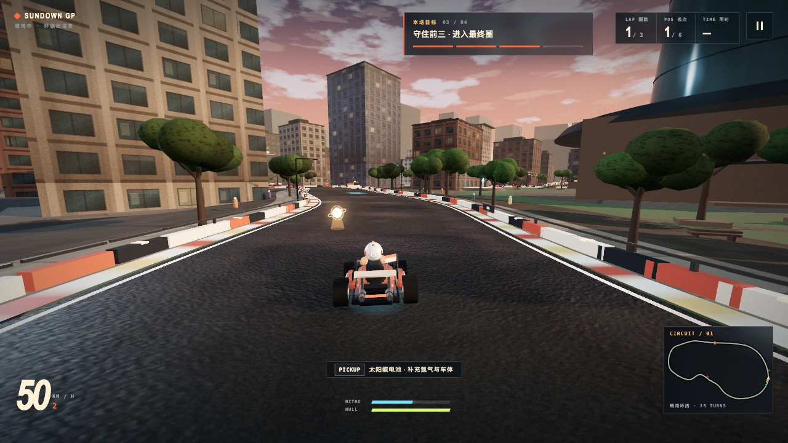
太阳能电池
金色太阳能电池悬浮在赛车线上，穿过即可补充氮气并修复车体。实体、光晕、拾取音效与 HUD 数值同时变化。

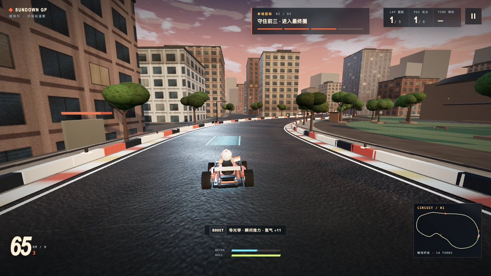
导光带
青色导光带铺在路面上，碾过即获得瞬时推力并补充少量氮气。它是赛道设计的一部分，也是漂移之外的第二种加速资源。

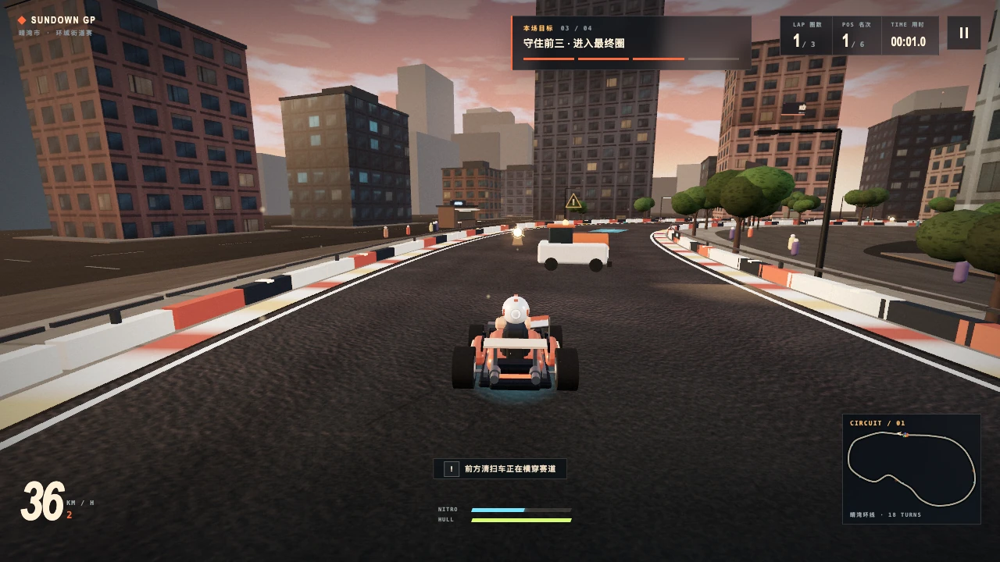
清扫车危险
两辆清扫车按周期横穿赛道。世界空间感叹号、频闪灯和电台/HUD 预警同时出现，避开后继续推进。

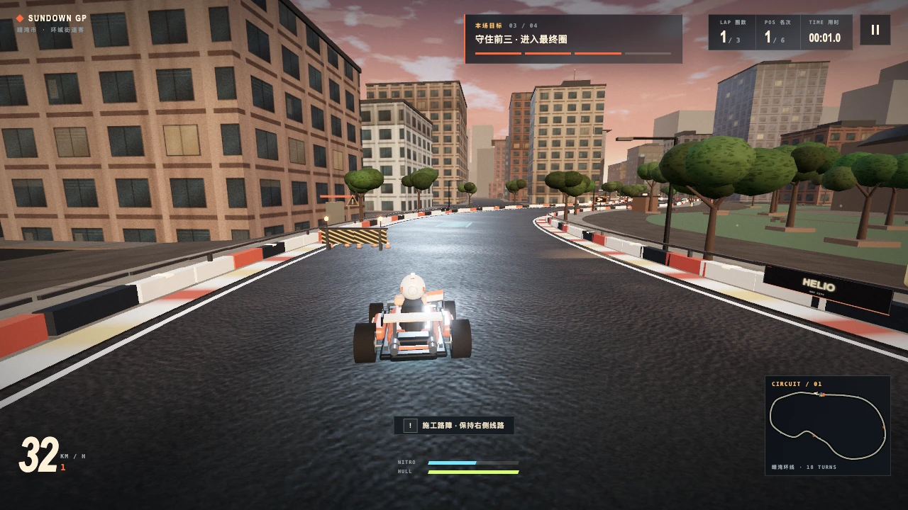
施工路障
固定路障占据一条线路，迫使玩家在高速中选择走线。撞上会扣车体耐久并推离轨迹。

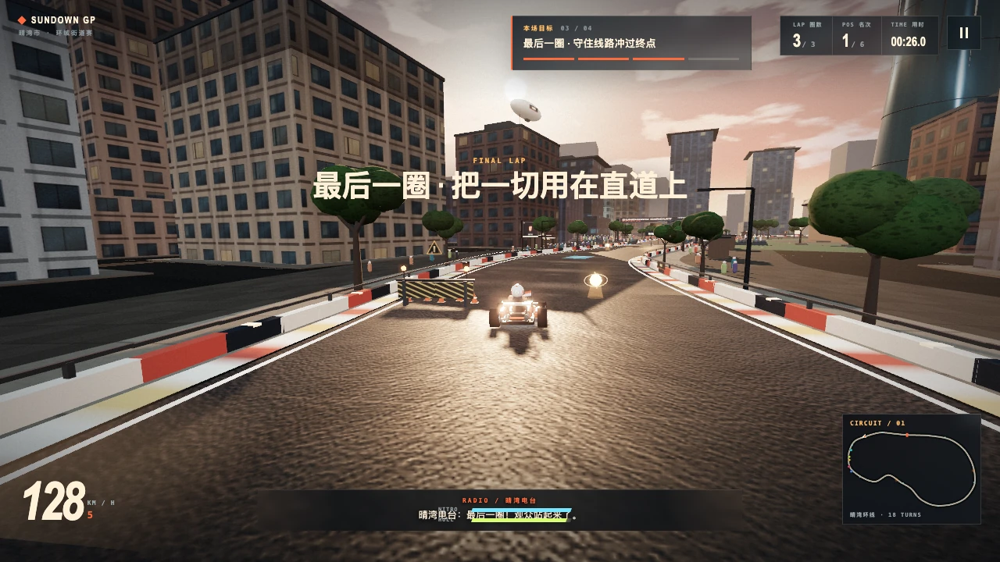
最后一圈
目标链、圈数、电台字幕与中央提示一起进入最后一圈。前三名才能登上领奖台。

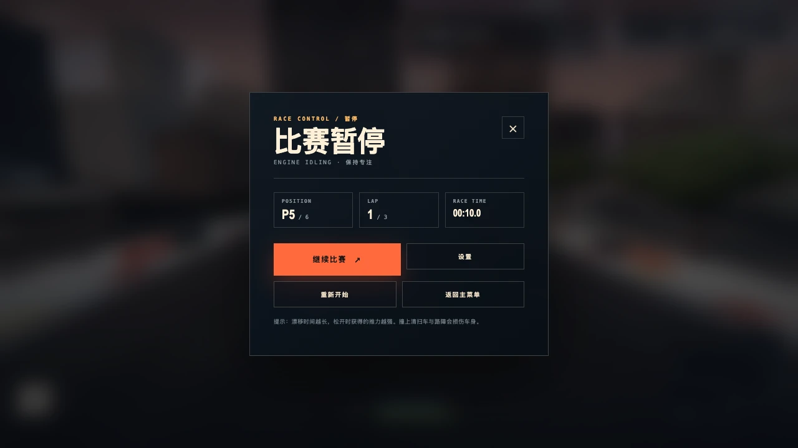
暂停与比赛控制
暂停画面保留当前名次、圈数、比赛时间，可继续、设置、重新开始或返回主菜单。

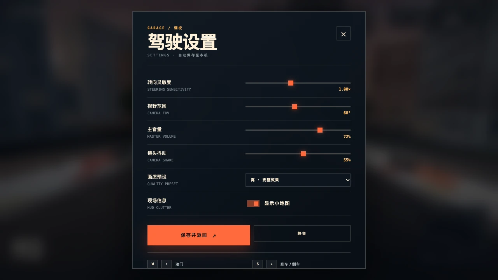
设置与持久化
转向灵敏度、FOV、主音量、镜头抖动、画质与小地图。静音与所有设置写入本地存储。

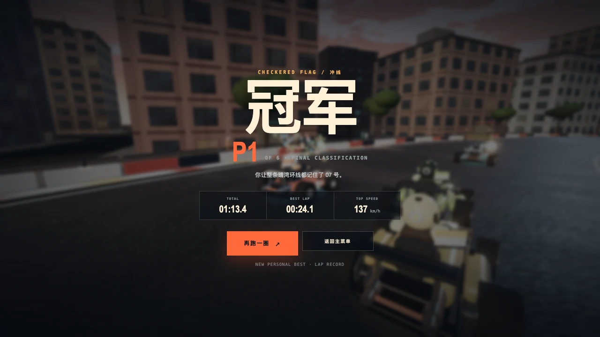
胜利结算
名次、总时间、最快圈、最高速度与本机新纪录。可立即再跑一圈或返回菜单。

失败与退赛
第四至第六名完赛或车体耐久归零都会进入失败结算，并显示具体原因；重开流程完整可用。

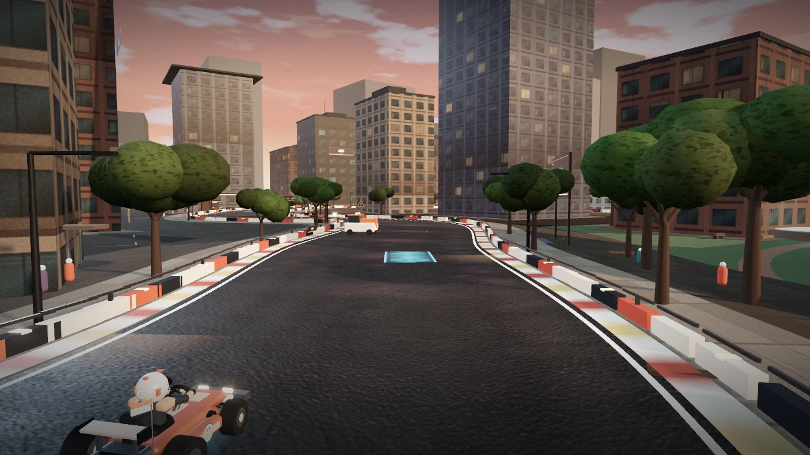
晴湾市与环线环境
程序生成的日落天空、云层、城市楼群、Helios 塔、商店、霓虹招牌、树冠、观众与灯柱；全部实时渲染，无外部美术资源。
移动端与声音 TOUCH / AUDIO / FEEDBACK
小屏不是缩小的桌面版：触控区域、按键位置、提示文案和 HUD 都会重新排布。

拇指能完成全部操作。
左侧方向、右侧油门，刹车/漂移/氮气围绕拇指布局；标题、目标、圈数、时间与名次在竖屏上重新排列，页面无横向溢出。
所有声音都由 Web Audio 实时合成，没有录音素材；首次点击后启动音频，主音量和静音随时可调。
每次操作都有视觉与听觉两种反馈：收集、撞击、冲刺、圈速和结算都不会沉默。
技能：photoreal-game
开发遵循 photoreal-game skill 的工程顺序：完整可玩外壳 → 固定机位截图 → 画面、光照、密度 → 碰撞和实机试玩 → 移动端与性能验收。它不是素材包；项目中没有任何来自参考图片、模型、字体或音频的资产。视觉素材全部由代码和 Canvas 生成。
愿意亲自跑一圈吗？
3 圈 · 6 车 · 一条穿城的日落赛道 · 单文件离线运行。